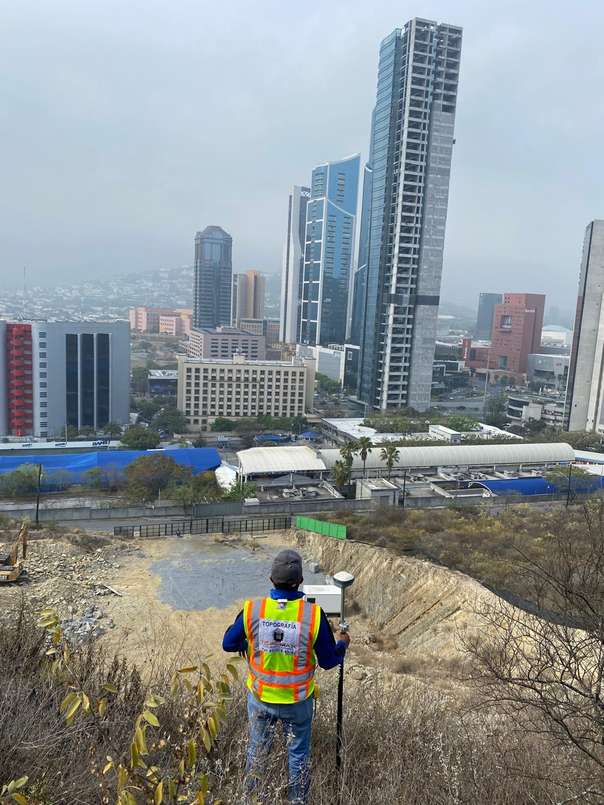
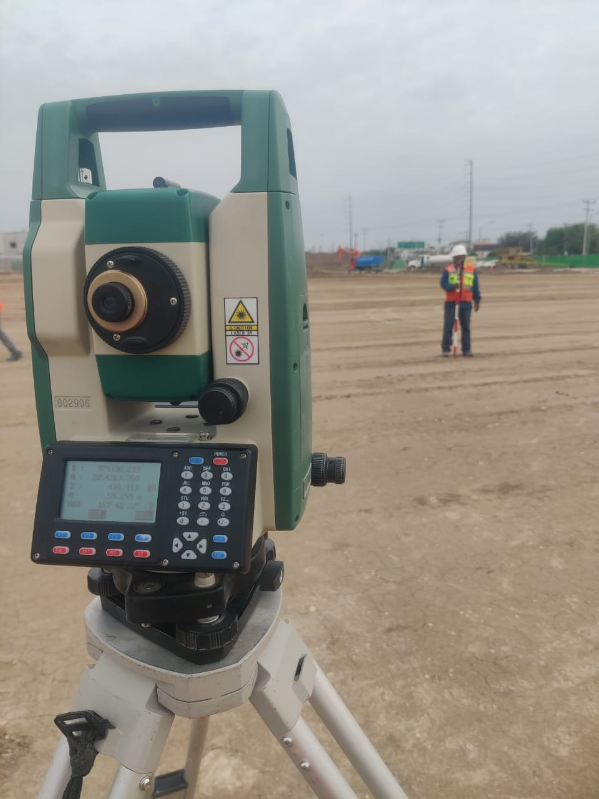
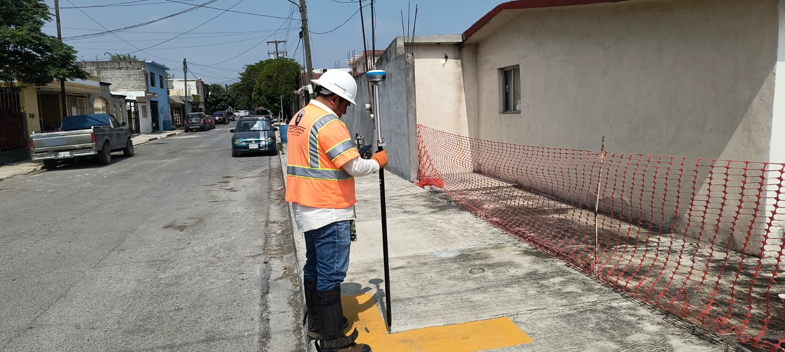
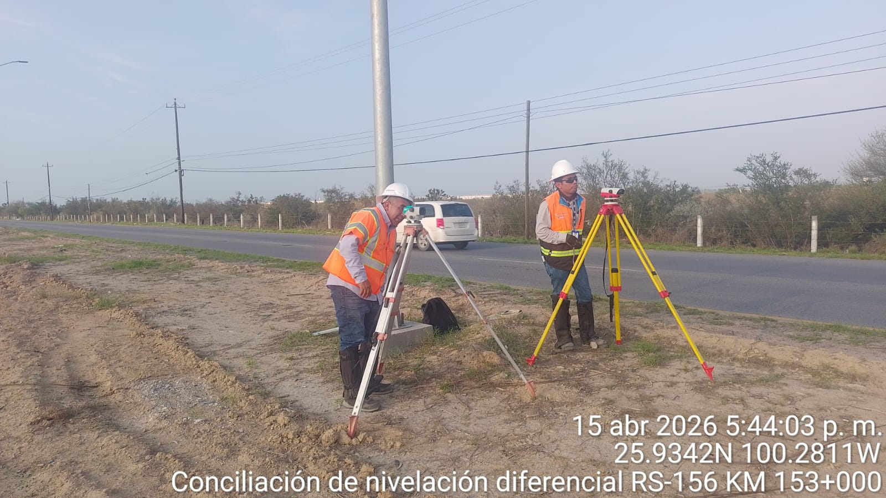
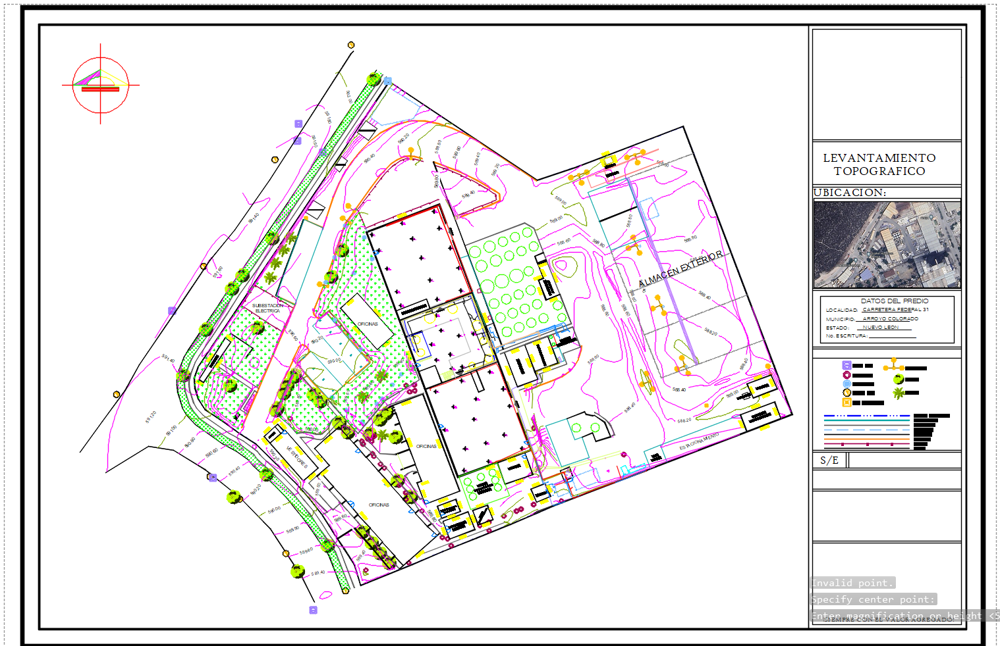

Mediciones precisas de terrenos

Marcado de puntos y niveles para construcción

Uso de GNSS para coordenadas exactas

Personal Capacitado para la atención de obra y cliente

Procesamiento y entrega de información en tiempo oportuno
TOPOMAX (Topografía Máxima) Es una empresa con sede en el Estado de Nuevo León dedicada a realizar servicios topográficos abarcando obra civil, levantamientos topográficos, control geométrico, volumetrías, deslindes, trazos, nivelación, supervisión de obra etc. que fue pensada con la finalidad de prestar servicios profesionales de Topografía y proyectos en las diferentes ramas con carácter interdisciplinario, brindando apoyo técnico para resolver una gran diversidad de problemas que enfrentan los sectores público y privado.
Brindar soluciones prácticas y eficientes en el área de topografía, así como un servicio de calidad en Proyectos y obra civil en general con la calidad requerida dentro de los tiempos convenidos. Que rebase las expectativas del cliente, apoyados en el uso de equipos de alta tecnología y Paquetes computacionales.
CEL: 811-274-83-60
ADMTOPOMAX@gmail.com
Escobedo, Nuevo León